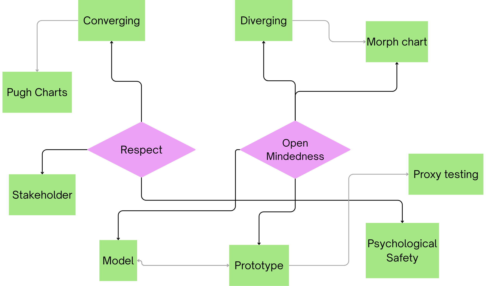

Design Position
To me, engineering design is the applied science of developing stakeholder-centered solutions to identified opportunities. While I remain positioned on the methodical side of the design spectrum, my approach has evolved from a linear progression into a deliberate, strategic framework. I no longer view design as merely "following the cycle," but as a series of intentional negotiations between my core values of respect and open-mindedness, and the specific constraints of a project.

I believe that respect is the foundational requirement for design. This manifests as respect for the user through stakeholder analysis and respect for the team through psychological safety. Without a safe environment for critique, a team cannot effectively discuss complex problems. This approach additionally influences my use of modeling and prototyping to ground my justification in physical reality, ensuring that my mindset of "anything is possible" remains rooted in functional evidence.
My practice has shifted from a "linear approach" toward a more strategic Divergence-to-Convergence workflow. Influenced by the FDCR framework, I now assess the opportunity and generate all potentially viable solutions to force myself into creativity. For instance, our team initially assumed the bike's frame was the only stable load-bearing point. However, through proxy testing, we discovered a technical "aha" moment: the front-pack position was less subject to destructive forces than other locations, despite being on a rotational axis. This data-driven converging process taught me that design is sometimes in a counter-intuitive debate with physics.
To add upon my how my practice has changed, I recall a specific moment from Praxis II where my team and I were brainstorming attachment styles of our device to a screw. I believe this evolution is somehow shaped by my Austrian heritage and the cognitive structure of the German language. In German, the verb, or the action, is often placed at the very end of a sentence. While thinking to myself in German, I was in the middle of constructing a sentence concerning anhängen or “attach”, when suddenly the verb halten or “to hold” popped in my mind, which prompted me to think of the continuously variable attachment featured in COMETS, where the device snugly “holds” a screw in place, rather than “clamps” it, as the previous prototype did. This simple linguistic delay serves as a necessary reminder that it is important to allow ourselves such a delay when putting our creativity to work.
Ultimately, my evolution is defined by increased intentionality. I have moved from an intuitive, “brute-force” process to a traceable one, where tools like Modeling and Prototyping are selected specifically to provide the required context. This portfolio is an assessment of that transition: how I have learned to embrace the strategic delay through my work on the BikePack Buddy and COMETS.